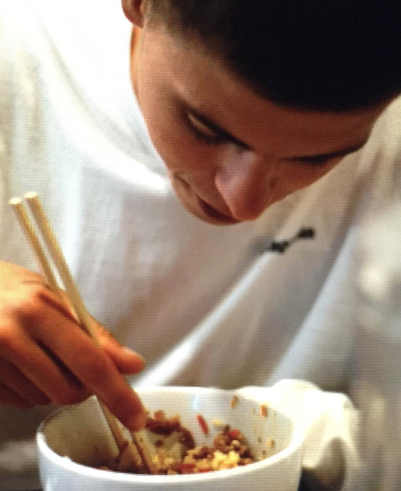
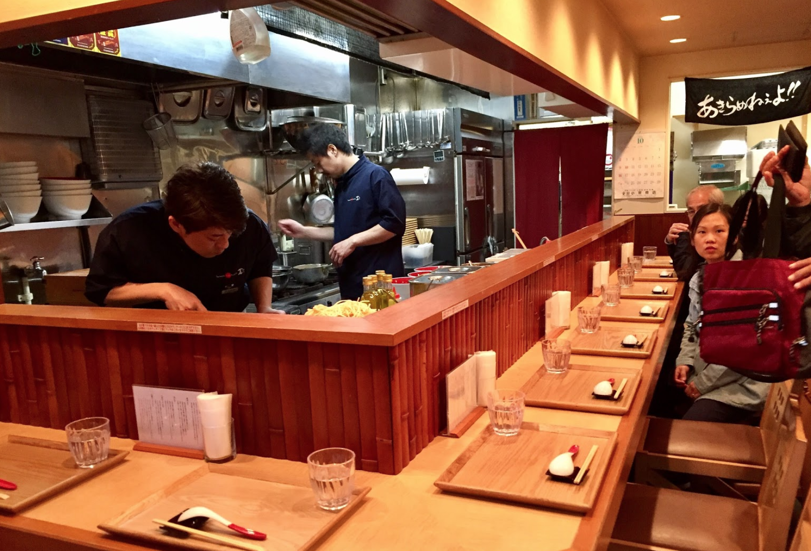

Det skal du spise i Japan

Der er fyldt med mad og restauranter i Japan – allevegne stort set. Især i de store byer kan du næsten ikke gå igennem en gade uden der ligger restauranter.
Hvis du ikke allerede har styr på det så skal du lære at spise med pinde inden du rejser til Japan. Alle retter spises med spisepinde, så hvis du ikke har nogenlunde styr på det får du ikke meget at spise. Selv morgenmaden spises med pinde.(Spisepinde hedder forresten ’hashi’’hashi’ på japansk.)
Og husk derudover at man ikke giver drikkepenge i Japan. Her vil jeg beskrive hvad du kan få af mad i Japan, og give fortæller om mine egne personlige favoritter.
Sushi
Der er mere end 5.000 sushirestauranter i Tokyo alene! Jeg spiste i mine 10 dage i Tokyo på ca 6 sushi steder. I min mening, finder du de bedste sushi steder gemt lidt væk fra de store gader. De er meget autentiske og det er en helt vild oplevelse.

Vær opmærksom på, at japansk sushi er ikke som du kender den i Danmark! Man kan godt få makiruller i Japan, men det ses sjældent, og der er tit i enorm størrelse
Her er lidt forskellige typer sushirestauranter du kan finde:
- Running-sushi (fungere næsten som i Danmark, men vil KLART anbefale noget mindre og autentisk)
- Sushi i Family Mart (Japansk 7/11) (Kan virkelig også anbefales hvis du er på farten. Det er hurtigt, billigt og smager fremragende!)
- Drive-in sushi (ja du læste rigtigt)
Ramen
Ramen er en slags nudelsuppe. For det meste serveret med noget svinekød ala flæskesteg på toppen og nogle grøntsager.
Det er noget af det der bliver spist mest af i Japan, og du finder de må Ramen ’barer’ overalt.
De fleste steder bestiller du den variant af Ramen du ønsker på en maskine foran restauranten, du betaler også i maskinen og så kommer der en lille billet ud til dig. Den afleverer du inde i restauranten og så bliver din ramen lavet klar til dig på ingen tid.
Du spiser ramen med spisepinde og en ske. HUSK at slurpre når du spiser ramen, det er en hyldest til kokken. Ramen er meget billig, du giver cirka 40 kr. pr. person for en stor portion.

Tonkatsu
Tonkatsu er en japansk paneret kotelet, der minder om weinerschnitzel i panering, men MEGET bedre hvis du spørger mig.
Det serveres ofte i en sammensat menu, hvor kødet er skåret i skiver og serveres med hvidkølsstrimler, en skål ris, kinaradise og verdens bedste sovs, nemlig bulldog sovsen! (bare rolig der er IKKE hund i)
Det er mine tre favorit-retter fra min tur i Japan. Men det er selvfølgelig bare en meget nedkogt udgave. Jeg smagte alverdens lækre retter i Japan og det var nok den bedste kulinariske oplevelse på alle mine rejser.